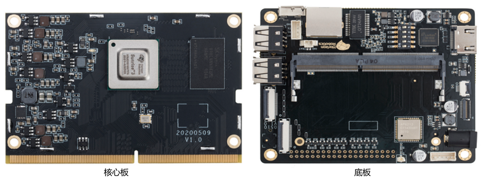
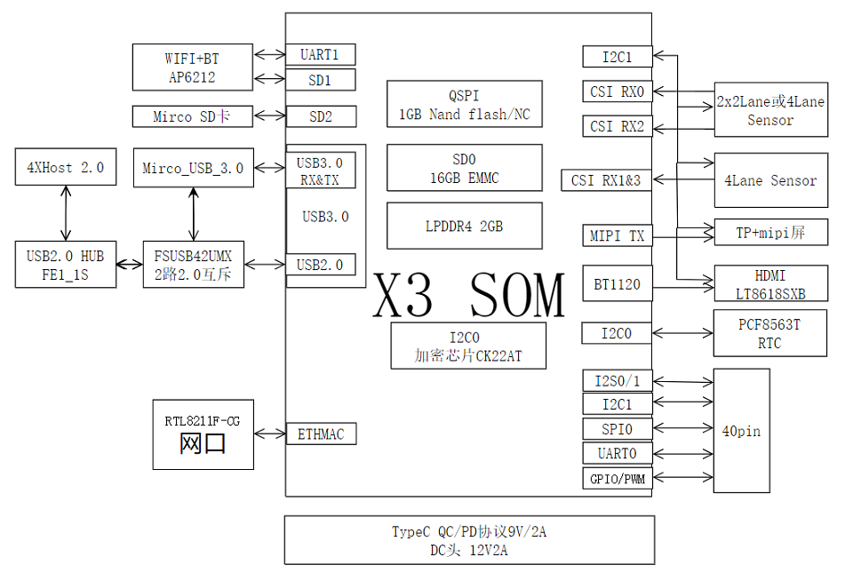
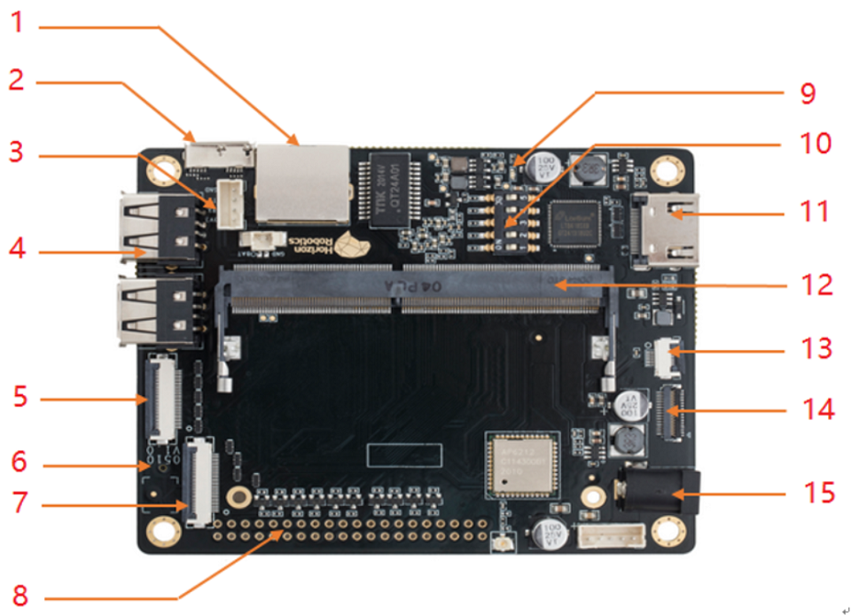
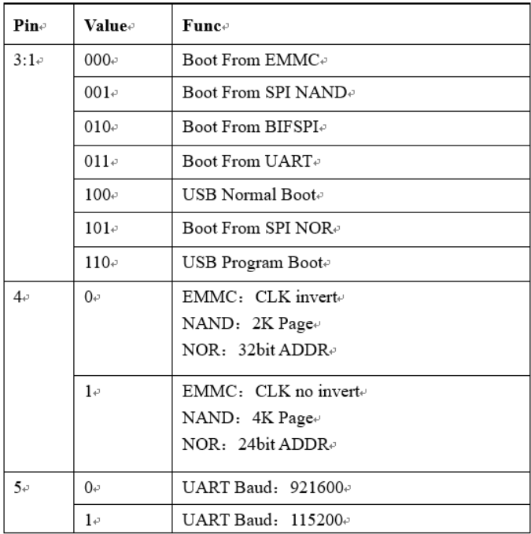
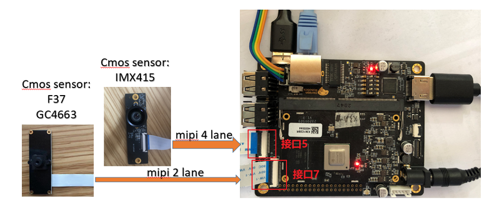
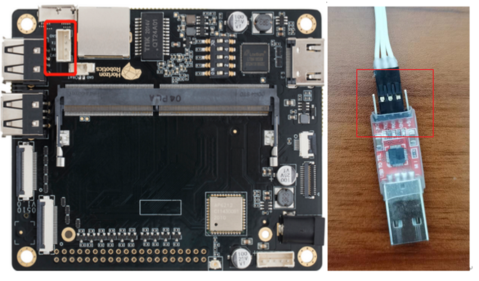
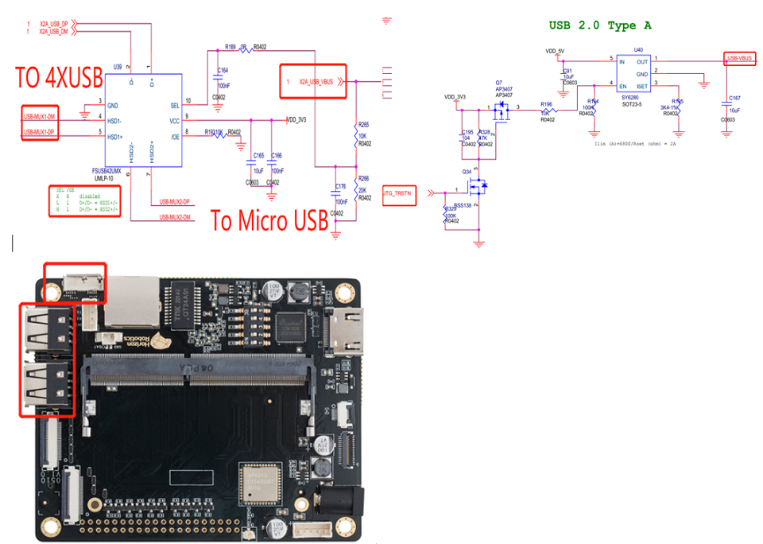
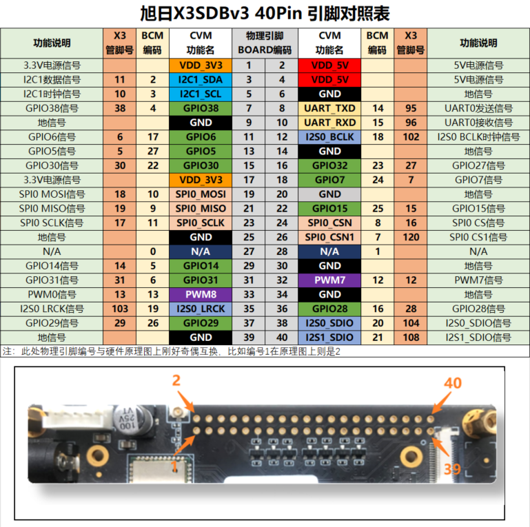

2.6. X3 SDB v3 开发板接口说明
2.6.1. 概述
地平线当前在使用的X3 SDB开发板存在多个硬件版本，各版本功能基本通用，仅在接口引出和管脚使用上存在区别。如果在使用的硬件上有 v1、v2、v3 字样的丝印，接口定义请查阅本章节核对。
2.6.2. 硬件外观

2.6.3. 功能框图

2.6.4. 底板接口

| 序号 | 接口名称 | 使用说明 |
|---|---|---|
| 1 | 以太网口 | 开发板默认IP，192.168.1.10 |
| 2 | USB Device口 | usb device接口，使用micro usb 2.0、3.0线缆都可正常工作 |
| 3 | Debug串口 | 波特率921600，将附带杜邦线插入连接器中 |
| 4 | USB Host口 | usb host接口，通过底板的usb hub扩展出usb 2.0x4 |
| 5 | MIPI CSI 1 | mipi host1+3 4lane接口，对接imx415、8a10等模组 |
| 6 | TF卡槽(背面) | 接入tf存储卡 |
| 7 | MIPI CSI 2 | mipi host0/2 2+2lane接口，对接f37等模组 |
| 8 | 40PIN扩展口 | 接口定义参见开发板原理图 |
| 9 | Power LED | 电源指示灯，可通过点亮状态判断板子上电状态 |
| 10 | DIP Switch | X3 bootsel模式选择，默认全0 |
| 11 | HDMI接口 | HDMI接口，输出格式1080p30 |
| 13 | TP接口 | 接入触摸屏 |
| 14 | MIPI DSI接口 | 接入LCD显示屏 |
| 15 | 电源接口 | 配合12V@2A适配器使用 |
2.6.4.1. DIP开关真值表
序号10是X3的启动选择项，支持选择启动方式、设置串口波特率。

2.6.4.2. 摄像头
开发板提供两路MIPI CSI接口，可同时接入两路摄像头。目前开发板配件提供了几种不同规格的摄像头模组，以满足不同用户的功能评测要求。模组规格如下：
| 序号 | Sensor | 分辨率 | FOV | I2C ID | MIPI CSI接口 |
|---|---|---|---|---|---|
| 1 | IMX415 | 800W | H:80 V:51 D:88 | 0x1a | 接口5 |
| 2 | GC4663 | 400W | H:104 V:70 D:113 | 0x29 | 接口7 |
| 3 | JXF37 | 200W | H:62 V:37 D:68 | 0x40 | 接口7 |
安装方式上，摄像头模组通过FPC排线跟开发板MIPI CSI接口相连，如下图：

2.6.4.3. 串口
电源、地、RX、TX，这些引脚跟开发板串口的连接关系如下：
GND，串口转接板的地线，接开发板串口的 GND 针
TXD，串口转接板的输出线，接开发板串口的 TX 针
RXD，串口转接板的输入线，接开发板串口的 RX 针
3.3V，电源，不需要连接

2.6.4.4. USB
本版本开发板提供一路Micro USB3.0和4路USB2.0。其中Micro USB中的USB2.0与4路USB2.0的功能互斥，并通过插线检测自动切换主从模式。具体电路实现如下图所示。
默认状态下X3为usb host模式，X2A_USB_VBUS自动配置为低，同时需将JTG_TRSTN配置为高，打开4路USB2.0的供电电源。
# 手动配置JTG_TRSTN拉高的命令
echo 4 > /sys/class/gpio/export
echo out > /sys/class/gpio/gpio4/direction
echo 1 > /sys/class/gpio/gpio4/value
当插入Micro USB线缆时，会自动切换到device模式，并将X2A_USB_VBUS自动配置为高。

2.6.4.5. 40PIN
开发板提供一路40PIN接口，方便用户扩展外围接口，接口定义如下（更多功能复用情况请查阅 documentation/开发板硬件接口/x3sdbv3_40pin_functions_list.xlsx）：
